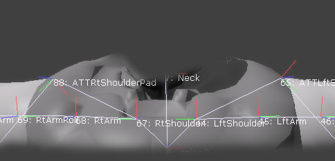
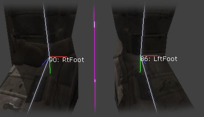
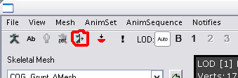

UDN
Search public documentation:
AnimationMirroringJP
English Translation
中国翻译
한국어
Interested in the Unreal Engine?
Visit the Unreal Technology site.
Looking for jobs and company info?
Check out the Epic games site.
Questions about support via UDN?
Contact the UDN Staff
中国翻译
한국어
Interested in the Unreal Engine?
Visit the Unreal Technology site.
Looking for jobs and company info?
Check out the Epic games site.
Questions about support via UDN?
Contact the UDN Staff
アニメーションミラーリング
ドキュメントの概要: UnrealEngine? のアニメーションミラーリング機能の設定および使用使用方法。 ドキュメントの変更ログ: James Golding により作成。概要
ゲームには、鏡像表示となった画像によるアニメーションが必要であることがよくあります。たとえば、「左を向いた場合」と「右を向いた場合」の両方のアニメーションが必要な場合などです。。これらの両方のアニメーションを作成して、エンジンに取り込むことも可能です。しかし、鏡像表示のアニメーションをすぐに生成し、アニメーションの動的なブレンドをミラーリング処理ができる方がよいでしょう。ミラーリングを使用するには、骨格が対称でなければならないことにご注意ください。SkeletalMesh (骨格メッシュ) の設定
ミラーリングを使用する前に、SkeletalMesh に特定の情報を設定しなければなりません。AnimSetViewer (アニメーションセットビューア) でメッシュを開き、右側の [メッシュ] タブにあるミラーリング設定に移動します。最初に設定するのは SkelMirrorAxis - キャラクターをミラーリングするための軸です。これは [メッシュ] スペース内にあることにご注意ください。つまり、RotOrigin が適用される 前 に、3Dパッケージ内で作成されたリファレンスフレームです。次に SkelMirrorFlipAxis を設定します。ボーン移動をミラーリングする時は、ボーンが「裏表」にならないように軸のひとつを反転する必要があります。どの軸を反転するかは、その骨格の構造やどの軸をデフォルトに設定したかによって異なります。しかし、 SkelMirrorTable でボーンごとにこのデフォルトを上書きすることができます(詳細は後で説明します)。 ここで軸の反転の使用について、いくつかの例をあげておきます。最初の図では、ボーン88はミラーリングされ、次に X 軸が反転されたボーン65にマップされています。
次の図では、ボーン90がミラーリングされ、次に X 軸が反転されたボーン86にマップされています。
骨格メッシュのミラーリング設定で最も時間がかかるのは、 SkelMirrorTable を正しく処理することです。この SkelMirrorTable というテーブルは、各ボーンがミラーリングされた時に、アニメーションをどこから取得するべきかを示すマッピングです。たとえばテーブル内で、右ひざのソースは左ひざとなりますが、背骨は中心線にあるため、ソースは背骨のままです。アニメーションセットビューアにはこのマッピングテーブルを自動作成するツールが含まれています。[メッシュ] メニューから [Auto-build Mirror Table] (オートビルドミラーテーブル)を選択します。これで、テーブルが作成されます。そして、基準ポーズの状態で、ミラー面を境として基準に対応する位置にあるボーンをマッチしようとします。注意: このツールを起動させる前に SkelMirrorAxis を設定する必要があります。 このツールは通常、足、腕、指などを含めたボディの大部分に適しています。同じ部位に複数のボーンがあるか、または多数のボーンが近くにあるとき (顔のボーンを多く使っているときなど) には問題が生じる場合もあります。テーブルが作成されれば、AnimSetViewer の[View Mirrored](ミラー結果を表示)ボタンを押すことで作業の結果を見ることができます。
見た目を正しくするには、自動作成されたテーブルをある程度修正することが必要な場合が普通です。[メッシュ]タブから、 SkelMirrorTable セクションを展開すると、各ボーンの設定項目が表示されます。 各エントリ内では、移動の元となるボーン番号が表示されます。これらは必ず対となっている必要があります。つまり、ボーン88のソースがボーン65なら、ボーン65のソースは88でなければなりません。どのインデックスがどのボーンに一致するかを判断するには、3Dビューポートでボーン名をオンにするか、[メッシュ] メニューのオプション[Copy Bone Names To Clipboard] (クリップボードにボーン名をコピー) を使用し、テキストエディタにそのリストをペーストします。 また、ボーンごとに BoneFlipAxis を調整して、_SkelMirrorFlipAxis_ のデフォルトを上書きすることもできます。ミラーリングヘルプツール
AnimSetViewerのMesh メニューにて、ミラーテーブルでの作業を少し簡単にするオプションがいくつかあります。Auto Build Mirror Table(自動生成ミラーテーブル)
この機能は既存のメッシュのミラーテーブルを自動的にビルドします。修正作業が必要になると思われますが、作業を始めるにはよい基礎となります。Check Mirror Table(ミラーテーブルをチェック)
ミラーテーブルに問題があるかをチェックし、何か見つかった場合はポップアップテーブルで表示します。Copy Mirror Table to Clipboard (ミラー テーブルをクリップボードにコピー)
テクストエディタのミラーテーブルをチェックできるようにします。Copy Mirror Table to Selected Mesh.(ミラー テーブルを選択したメッシュからコピー)
メッシュが同じスケルトンを共有する場合、ミラーテーブルを再作成することなく簡単にコピーすることができます。AnimTree (アニメーションツリー) でミラーリングを使用する
ミラーリングを使用するために SkeletalMesh の設定が完了したら、AnimTree でのミラーリング使用は非常に簡単になります。インプットとアウトプットを持つ AnimNodeMirror (アニメーションノード ミラー) と呼ばれる、特別な AnimNode (アニメーションノード) タイプがあり、ツリーにこれを挿入すると、どんなインプット アニメーションブレンドでもミラーリングします。これによって、個別のアニメーション並びにアニメーションのブレンドをミラーリングすることができます。また、ミラーリングされたアニメーションと、ミラーリングされていないアニメーション間でのブレンドも可能になるため、移行が大幅にスムーズになります。 アニメーションノードにある bEnableMirroring フラグを使用すると、ミラーリング 挙動のオンとオフを切り替ることができます。アニメーションのミラーリングは非常に負荷が大きいため、AnimNodeMirrorの使用はできるだけ控えるようにしてください。
アニメーションノードにある bEnableMirroring フラグを使用すると、ミラーリング 挙動のオンとオフを切り替ることができます。アニメーションのミラーリングは非常に負荷が大きいため、AnimNodeMirrorの使用はできるだけ控えるようにしてください。